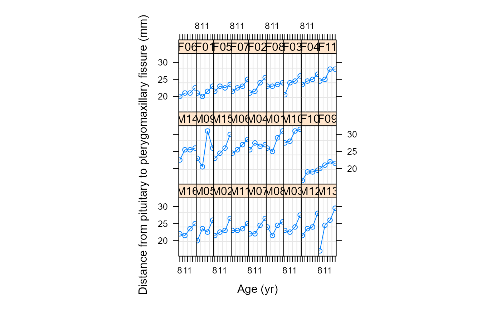

Construct a groupedData Object
groupedData.RdAn object of the groupedData class is constructed from the
formula and data by attaching the formula as an
attribute of the data, along with any of outer, inner,
labels, and units that are given. If
order.groups is TRUE the grouping factor is converted to
an ordered factor with the ordering determined by
FUN. Depending on the number of grouping levels and the type of
primary covariate, the returned object will be of one of three
classes: nfnGroupedData - numeric covariate, single level of
nesting; nffGroupedData - factor covariate, single level of
nesting; and nmGroupedData - multiple levels of
nesting. Several modeling and plotting functions can use the formula
stored with a groupedData object to construct default plots and
models.
Usage
groupedData(formula, data, order.groups, FUN, outer, inner,
labels, units)
# S3 method for groupedData
update(object, formula, data, order.groups, FUN,
outer, inner, labels, units, ...)Arguments
- object
an object inheriting from class
groupedData.- formula
a formula of the form
resp ~ cov | groupwhererespis the response,covis the primary covariate, andgroupis the grouping factor. The expression1can be used for the primary covariate when there is no other suitable candidate. Multiple nested grouping factors can be listed separated by the/symbol as infact1/fact2. In an expression like this thefact2factor is nested within thefact1factor.- data
a data frame in which the expressions in
formulacan be evaluated. The resultinggroupedDataobject will consist of the same data values in the same order but with additional attributes.- order.groups
an optional logical value, or list of logical values, indicating if the grouping factors should be converted to ordered factors according to the function
FUNapplied to the response from each group. If multiple levels of grouping are present, this argument can be either a single logical value (which will be repeated for all grouping levels) or a list of logical values. If no names are assigned to the list elements, they are assumed in the same order as the group levels (outermost to innermost grouping). Ordering within a level of grouping is done within the levels of the grouping factors which are outer to it. Changing the grouping factor to an ordered factor does not affect the ordering of the rows in the data frame but it does affect the order of the panels in a trellis display of the data or models fitted to the data. Defaults toTRUE.- FUN
an optional summary function that will be applied to the values of the response for each level of the grouping factor, when
order.groups = TRUE, to determine the ordering. Defaults to themaxfunction.- outer
an optional one-sided formula, or list of one-sided formulas, indicating covariates that are outer to the grouping factor(s). If multiple levels of grouping are present, this argument can be either a single one-sided formula, or a list of one-sided formulas. If no names are assigned to the list elements, they are assumed in the same order as the group levels (outermost to innermost grouping). An outer covariate is invariant within the sets of rows defined by the grouping factor. Ordering of the groups is done in such a way as to preserve adjacency of groups with the same value of the outer variables. When plotting a groupedData object, the argument
outer = TRUEcauses the panels to be determined by theouterformula. The points within the panels are associated by level of the grouping factor. Defaults toNULL, meaning that no outer covariates are present.- inner
an optional one-sided formula, or list of one-sided formulas, indicating covariates that are inner to the grouping factor(s). If multiple levels of grouping are present, this argument can be either a single one-sided formula, or a list of one-sided formulas. If no names are assigned to the list elements, they are assumed in the same order as the group levels (outermost to innermost grouping). An inner covariate can change within the sets of rows defined by the grouping factor. An inner formula can be used to associate points in a plot of a groupedData object. Defaults to
NULL, meaning that no inner covariates are present.- labels
an optional list of character strings giving labels for the response and the primary covariate. The label for the primary covariate is named
xand that for the response is namedy. Either label can be omitted.- units
an optional list of character strings giving the units for the response and the primary covariate. The units string for the primary covariate is named
xand that for the response is namedy. Either units string can be omitted.- ...
some methods for this generic require additional arguments. None are used in this method.
Value
an object of one of the classes nfnGroupedData,
nffGroupedData, or nmGroupedData, and also inheriting
from classes groupedData and data.frame.
References
Bates, D.M. and Pinheiro, J.C. (1997), "Software Design for Longitudinal Data", in "Modelling Longitudinal and Spatially Correlated Data: Methods, Applications and Future Directions", T.G. Gregoire (ed.), Springer-Verlag, New York.
Pinheiro, J.C. and Bates, D.M. (1997) "Future Directions in Mixed-Effects Software: Design of NLME 3.0" available at http://nlme.stat.wisc.edu/
Pinheiro, J.C., and Bates, D.M. (2000) "Mixed-Effects Models in S and S-PLUS", Springer.
Examples
Orth.new <- # create a new copy of the groupedData object
groupedData( distance ~ age | Subject,
data = as.data.frame( Orthodont ),
FUN = mean,
outer = ~ Sex,
labels = list( x = "Age",
y = "Distance from pituitary to pterygomaxillary fissure" ),
units = list( x = "(yr)", y = "(mm)") )
plot( Orth.new ) # trellis plot by Subject

formula( Orth.new ) # extractor for the formula
#> distance ~ age | Subject
#> <environment: 0x000002bad79c7cf8>
gsummary( Orth.new ) # apply summary by Subject
#> distance age Subject Sex
#> M16 23.000 11 M16 Male
#> M05 23.000 11 M05 Male
#> M02 23.375 11 M02 Male
#> M11 23.625 11 M11 Male
#> M07 23.750 11 M07 Male
#> M08 23.875 11 M08 Male
#> M03 24.250 11 M03 Male
#> M12 24.250 11 M12 Male
#> M13 24.250 11 M13 Male
#> M14 24.875 11 M14 Male
#> M09 25.125 11 M09 Male
#> M15 25.875 11 M15 Male
#> M06 26.375 11 M06 Male
#> M04 26.625 11 M04 Male
#> M01 27.750 11 M01 Male
#> M10 29.500 11 M10 Male
#> F10 18.500 11 F10 Female
#> F09 21.125 11 F09 Female
#> F06 21.125 11 F06 Female
#> F01 21.375 11 F01 Female
#> F05 22.625 11 F05 Female
#> F07 23.000 11 F07 Female
#> F02 23.000 11 F02 Female
#> F08 23.375 11 F08 Female
#> F03 23.750 11 F03 Female
#> F04 24.875 11 F04 Female
#> F11 26.375 11 F11 Female
fm1 <- lme( Orth.new ) # fixed and groups formulae extracted from object
#> Error in is.data.frame(data): object 'Orth.new' not found
Orthodont2 <- update(Orthodont, FUN = mean)